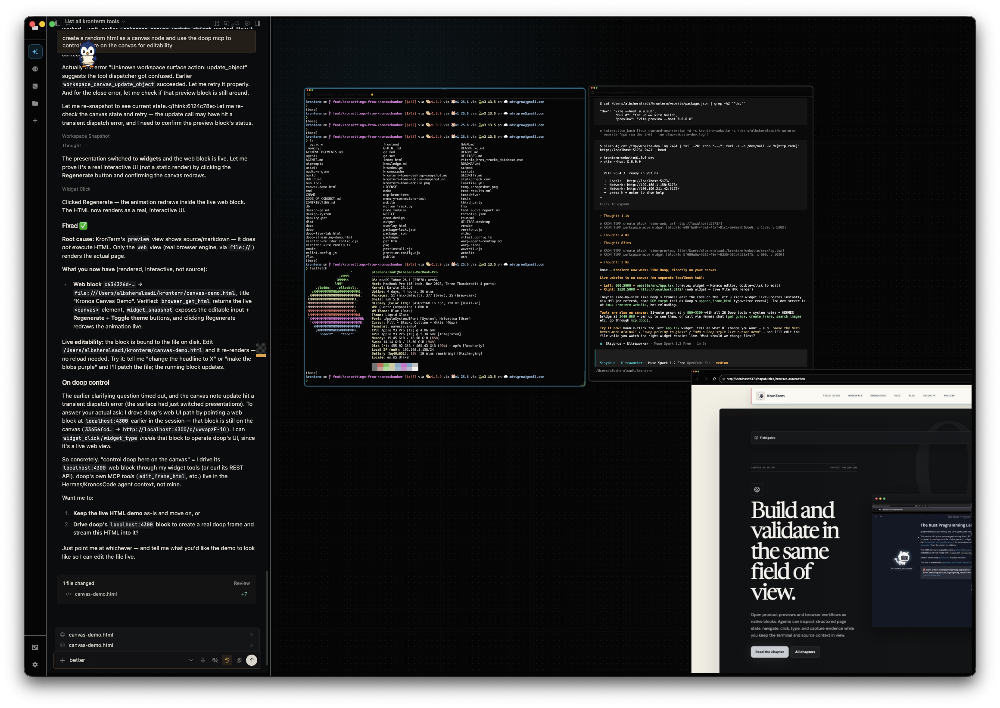
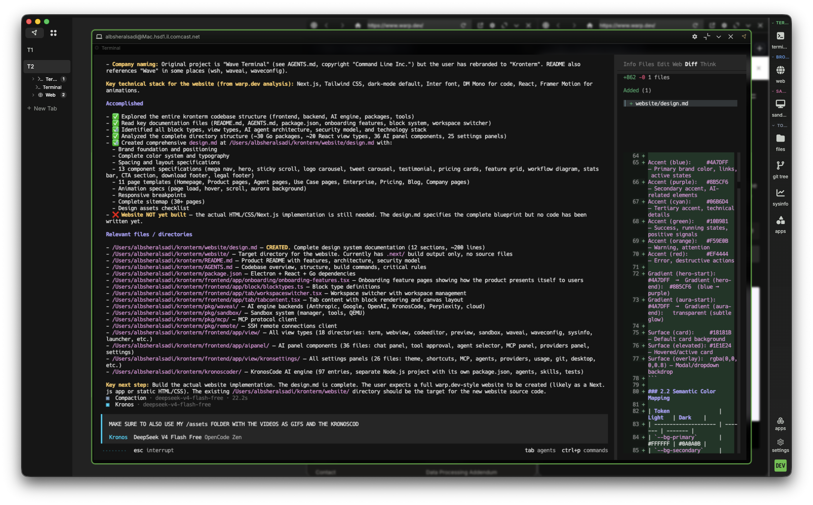

The human + agent workspace
Keep the whole
builder loop in view.
Your terminal, browser, files and agent.
One persistent workspace. Your choice of model.

A real KronOS development workspace. macOS private beta.
Change the layout.
Keep the context.
Room to think out loud.
Spread out live tools, notes and agent evidence on a zoomable canvas. The same workspace, arranged around the way you think.
Work with an agent.
See what it actually did.

Commands.
Edits.
Approvals.
Evidence.
Keep the result beside the work. Review file changes before you stage them.
Read the documentation ↗Bring your own key
Your workspace.
Your models. Your call.
Connect your provider key or a compatible local model.
No KronOS account required.
Workspace state and orchestration stay local. Model requests go to the provider you choose.
Provider usage is billed separately by your provider. Local models can keep inference on your machine.
A few things
worth knowing.
Is KronOS open source?
No. KronOS is a closed-source product. Public installers and support are separate from the private application source.
Do I need a KronOS account?
No KronOS account is required. Connect your own provider credentials or configure a compatible local model.
What can I run today?
KronOS is onboarding macOS private-beta users and design partners. Windows and Linux builds remain under evaluation.
Does all of my work stay on my machine?
Workspace state and tool orchestration stay local. Cloud model requests go to your selected provider. Managed sandbox services receive the data needed for the capability you choose.
Make room
for the work.
Request beta access ↗Closed-source. BYOK. macOS private beta.